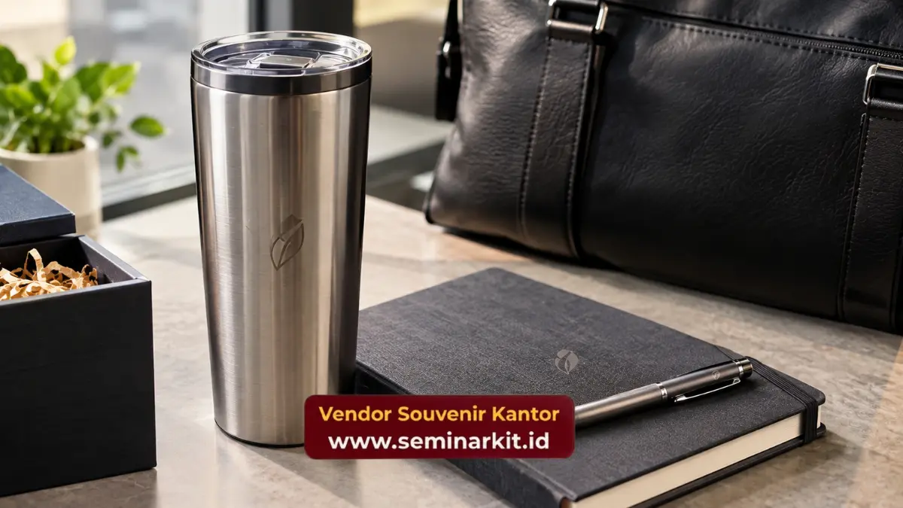

Paket hampers akhir tahun korporat untuk perusahaan di Denpasar perlu disiapkan lebih awal dengan produk terkurasi, packaging tematik, branding konsisten, dan distribusi multi-alamat.
- Hampers akhir tahun dapat digunakan sebagai bentuk apresiasi terhadap klien dan mitra bisnis.
- Produk sebaiknya dipilih berdasarkan fungsi dan profil penerima.
- Packaging tematik dapat menyesuaikan identitas perusahaan dan konteks akhir tahun.
- Pesanan multi-alamat membutuhkan data penerima yang terstruktur.
- vendorsouvenirkantor.web.id dapat membantu kebutuhan hampers korporat dan branding.
Kapan perusahaan sebaiknya memesan hampers akhir tahun?
Pemesanan hampers akhir tahun sebaiknya dipersiapkan sebelum periode produksi dan distribusi menjadi padat agar perusahaan memiliki waktu untuk menentukan produk, branding, packaging, dan daftar penerima.
Corporate gifting memang tidak hanya terjadi pada akhir tahun. Dalam studi Coresight Research yang dikutip Synchrony, apresiasi existing client atau partner menjadi salah satu kesempatan gifting yang disebut oleh 52 persen responden corporate gift buyers, sedangkan holiday disebut oleh 49 persen. Data tersebut berasal dari survei pasar Amerika Serikat.
Untuk kebutuhan akhir tahun, persiapan lebih awal membantu perusahaan mengurangi tekanan pada tahap approval desain, produksi, pengepakan, dan pengiriman.
Produk apa yang cocok untuk hampers akhir tahun korporat?
Hampers akhir tahun korporat dapat menggabungkan produk fungsional dengan produk pelengkap agar paket memiliki nilai penggunaan dan presentasi yang seimbang.
Tumbler premium
Tumbler premium dapat menjadi produk utama untuk gift set yang ingin digunakan setelah periode akhir tahun. Pilihan material dan finishing dapat disesuaikan dengan citra perusahaan.
Notebook dan stationery
Notebook, pulpen, dan stationery dapat menjadi bagian dari paket kerja. Produk ini cocok untuk penerima yang sering melakukan rapat atau aktivitas administrasi.
Hampers produk konsumsi
Produk konsumsi dapat digunakan untuk menambahkan unsur perayaan pada hampers. Komposisi dapat disesuaikan dengan kebijakan internal dan profil penerima.
Gift set eksekutif
Gift set eksekutif dapat menggabungkan beberapa produk premium dalam satu packaging khusus. Paket ini dapat digunakan untuk klien atau partner yang memiliki hubungan bisnis strategis.
Bagaimana menentukan tema packaging akhir tahun?
Packaging akhir tahun dapat menggunakan tema yang meriah tetapi tetap mengikuti identitas visual perusahaan.
Warna perusahaan dapat menjadi elemen utama, kemudian dikombinasikan dengan aksen akhir tahun melalui sleeve, kartu ucapan, pita, atau desain inner box. Perusahaan tidak harus menggunakan ornamen berlebihan untuk menciptakan kesan khusus.
Packaging tematik sebaiknya tetap mudah diproduksi dalam jumlah besar. Desain yang terlalu kompleks dapat meningkatkan kebutuhan produksi dan memperpanjang proses pengerjaan.
Bagaimana branding logo diterapkan pada hampers?
Branding logo pada hampers dapat ditempatkan pada box, sleeve, kartu ucapan, atau produk utama dengan ukuran proporsional.
Untuk corporate gift, logo yang terlalu dominan dapat membuat hampers terlihat seperti paket promosi. Branding yang lebih terkontrol dapat membuat hadiah terasa lebih personal sekaligus tetap membawa identitas perusahaan.
Konsistensi logo antara produk dan packaging juga membantu menjaga citra visual perusahaan.

Bagaimana mengatur distribusi hampers ke banyak alamat?
Distribusi multi-alamat perlu menggunakan data penerima yang lengkap dan format yang konsisten agar proses pengiriman lebih mudah dikendalikan.
Data minimal dapat mencakup nama penerima, nomor kontak, alamat lengkap, jumlah paket, dan catatan pengiriman. Perusahaan dapat mengelompokkan penerima berdasarkan wilayah untuk membantu proses fulfillment.
Untuk kebutuhan Melayani Pemesanan Souvenir di Denpasar, daftar penerima sebaiknya disiapkan sebelum packaging final agar label pengiriman dapat dibuat dengan benar.
Mengapa distribusi menjadi bagian penting dari corporate gifting?
Corporate gifting tidak berhenti pada pemilihan produk karena hadiah perlu sampai kepada penerima dalam kondisi baik dan pada waktu yang sesuai.
Hampers yang terlambat dapat kehilangan relevansi dengan momen akhir tahun. Packaging yang rusak juga dapat memengaruhi pengalaman penerima.
Karena itu, perusahaan perlu memperhitungkan waktu produksi, quality control, pengepakan, pengiriman, dan kemungkinan kendala distribusi.
Bagaimana menghindari hampers akhir tahun yang terlihat generik?
Hampers dapat dibuat lebih relevan melalui kombinasi produk yang memiliki fungsi, packaging yang konsisten, dan pesan apresiasi yang disesuaikan.
Perusahaan dapat menggunakan beberapa tingkat paket untuk penerima berbeda. Klien strategis dapat menerima gift set yang lebih lengkap, sedangkan penerima dengan hubungan bisnis umum dapat memperoleh paket yang lebih sederhana.
Pendekatan tersebut membantu perusahaan mengelola anggaran tanpa membuat semua penerima mendapatkan paket yang identik.
Bagaimana menyiapkan pemesanan untuk musim akhir tahun?
Pemesanan dapat dimulai dengan menetapkan jumlah penerima, kisaran paket, produk utama, teknik branding, desain packaging, dan kebutuhan distribusi.
Setelah konsep disetujui, perusahaan dapat memeriksa mockup atau sampel sebelum produksi massal. Pemeriksaan tersebut membantu memastikan logo, ukuran produk, warna packaging, dan susunan isi sesuai dengan kebutuhan.
Untuk perusahaan yang memiliki penerima di banyak alamat, proses administrasi pengiriman sebaiknya disiapkan bersamaan dengan proses produksi.
Konsultasikan Kebutuhan Corporate Gift
Perusahaan yang membutuhkan paket hampers akhir tahun dapat menghubungi vendorsouvenirkantor.web.id untuk menyiapkan produk, branding logo, packaging tematik, dan distribusi.
Untuk kebutuhan Pengiriman ke Denpasar, siapkan jumlah penerima dan jadwal pembagian agar kebutuhan produksi dapat dikonsultasikan lebih awal.

Banner promosi: klik gambar untuk langsung terhubung ke WhatsApp tim sales.